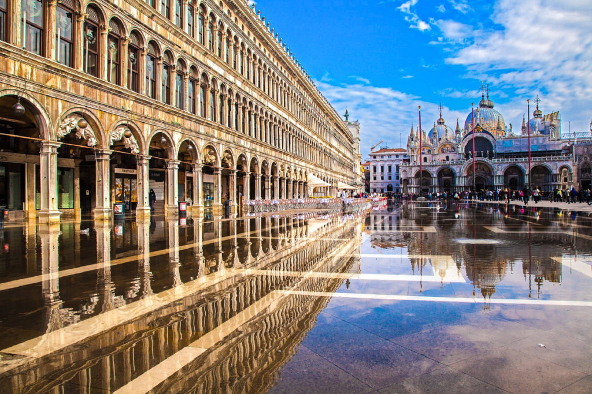

Площа святого Марка
Площа святого Марка – серце Венеції,улюблене місце відпочинку усіх туристів. Єдина площа у місті в минулому була центром політичного та релігійного життя (тут проводили різноманітні процесії та турніри). Довжина площі становить 175 метрів,а весь простір ділиться на три частини: Велика площа, Мала площа та Площа Левенят (отримала свою назву завдяки статуям левів). На площі знаходиться Дзвіниця Собору Святого Марка – Кампаніла – висотою 98,6 метра.
"Наступна сторінка"